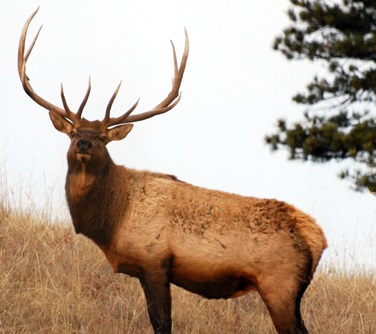
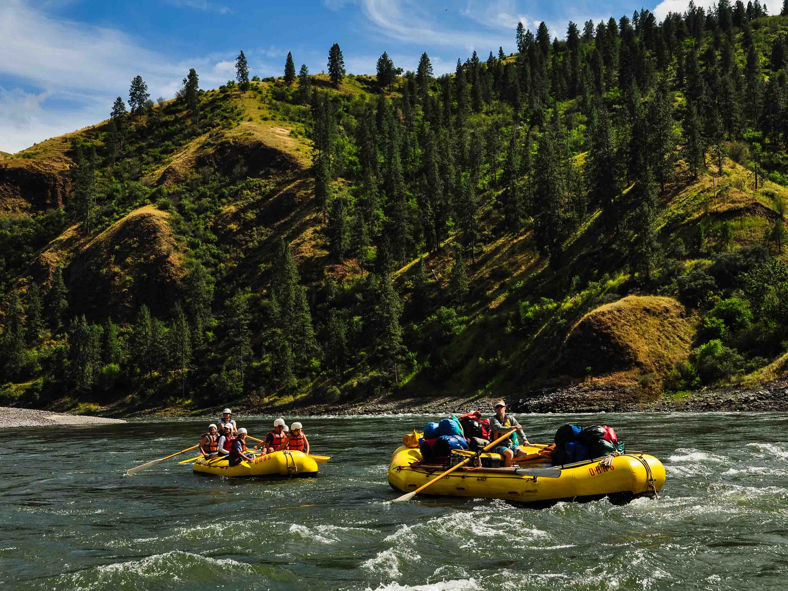

(Navigational Google Map)
Nestled deep in the Frank Church Wilderness of No Return winds the Salmon river. The Salmon was given the nickname long ago as the River of No Return by the people living near it because of the number of folks that came to visit and fell so in love with the rugged beauty of the river that they never left.
Salmon River

Herds of elk and deer graze on the hillsides around the river and bear and bighorn sheep are also
commonly sighted.
The river corridor is also lined with awe inspiring ponderosa pine which tower over the sandy beaches in
the campsites
and provide shelter from sun or rain when needed.
Wildlife
Wildlife

Let's not forget the rapids! They range from class I-IV. The Salmon is one of the longest undammed rivers in the United States. As a free flowing river the water is higher, faster, and colder in the early summer and lower, slower, and warmer in the late summer. There are good rapids all summer...but families with children who like to swim tend to appreciate the late summer's slower, warmer water more.
Rapids

Majestic Salmon River History
Learn More by clicking the button.
Or visit some of our affiliate sites listed below to learn more about what Mother Nature has to offer.
History